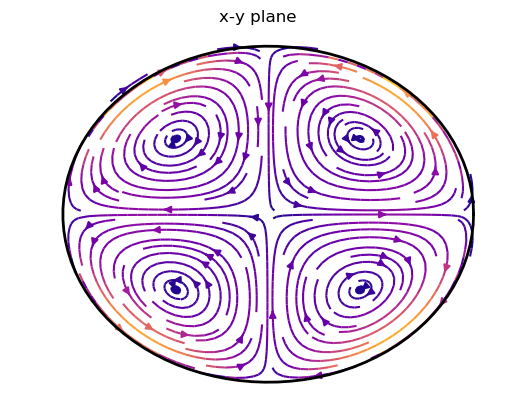
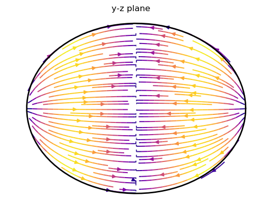
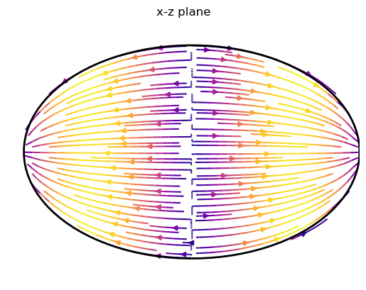

Inertial modes in an ellipsoid
We want to solve the inertial mode equation
\[\partial_t \mathbf{u} = -2\mathbf{\Omega}\times\mathbf{u}-\nabla p\]
by expanding the velocity in a Cartesian polynomial basis and projecting onto these basis vectors following Lebovitz (1989).
Setting up the problem
# Include the packages in Julia
using Mire, LinearAlgebra, PyPlot #PyPlot uses matplotlib for plotsThe triaxial ellipsoid is defined by
\[\frac{x^2}{a^2}+\frac{y^2}{b^2}+\frac{z^2}{c^2}=1.\]
The rotation axis is taken to be along $z$, so that $\mathbf{\Omega}=(0,0,1)$. We truncate at a maximum monomial polynomial degree $N = 3$, so that each monomial $x^i y^j z^k$ has $i+j+k\leq N$.
a,b,c = 1.1,0.9,0.7
V = Ellipsoid(a,b,c) #volume
Ω = [0.0,0.0,1.0] #rotation axis
N = 3 #truncation degree
# create hydrodynamic problem, using 3-D LebovitzBasis for the velocity:
p = HDProblem(N, V, Ω, LebovitzBasis) From here we can assemble the problem p. This means that we project the left and right hand side of the inertial mode equation onto the basis vectors $\mathbf{u}_j$ given by the LebovitzBasis. The pressure gradient force vanishes naturally in the projection, due to the incompressibility of the velocity. For the integration of the Cartesian polynomials (or rather the individual monomials) a convenient formula is used (compare Lebovitz, 1989).
We can assemble the problem p by calling (threads=true enables multithreading to accelerate larger scale problems)
assemble!(p; threads=false)The left and right hand side matrices p.LHS and p.RHS, respectively, then represent the left and right hand side of
\[\omega \int \mathbf{u}_i \cdot\mathbf{u}_j\, \mathrm{d}V = -2\int (\mathbf{\Omega}\times\mathbf{u}_i)\cdot\mathbf{u}_j\, \mathrm{d}V\]
so that the eigen problem reads
\[\omega B\mathbf{x}=A\mathbf{x}.\]
With B = p.LHS and A = p.RHS.
Solving for eigen modes
There are several ways to solve for eigen solutions of the generalized eigen problem. For small matrices we can simply solve directly
\[\omega B\mathbf{x}=A\mathbf{x}.\]
This can be done in Julia using the LAPACK routines for dense eigen problems are included in the standard library LinearAlgebra. Since A and B are sparse for now we have to convert B to a dense array by caling Matrix. This is only feasible for small N, since we are now dealing with dense arrays. For larger N and thus larger matrices iterative sparse solvers should be applied. An example for the sparse eigen solvers using Arpack.jl is given elsewhere.
A, B = Matrix(p.RHS), Matrix(p.LHS)
evals, evecs = eigen(A, B)Given the eigen values evals and eigen vectors evecs.
The eigen vectors $\mathbf{x}_i$ contain the coefficients $x_{ji}$, so that the eigen velocity $\mathbf{u}_i$ is given by
\[\mathbf{u}_i = \sum_{j}x_{ji}\tilde{\mathbf{u}}_j,\]
where $\tilde{\mathbf{u}}_j$ is the $j$-th basis vector, given in p.vbasis.el[j].
We can reconstruct the eigenvelocities $\mathbf{u}_i$ for all $i$ by calling velocities:
u = velocities(p.vbasis.el, evecs)u is now an array of 3-D vectors where the components are Cartesian polynomials with complex coefficients.
Plotting the mode
An example of plotting streamlines at equatorial and meridional sections of one of the modes.
Include some PyPlot.jl plotting routines.
include(joinpath(dirname(pathof(Mire)),"../example/plotting.jl"))
function plotmode(a,b,c,v_k; kwargs...)
figure()
plot_velocity_equator(a,b,v_k; kwargs...)
title("x-y plane")
# colorbar()
figure()
plot_velocity_meridional_x(b,c,v_k; kwargs...)
title("y-z plane")
# colorbar()
figure()
plot_velocity_meridional_y(a,c,v_k; kwargs...)
title("x-z plane")
# colorbar()
endWe plot the $m=2$ quasi-geostrophic eigen mode with a frequency of
k = findfirst(0.23 .< abs.(imag.(evals)) .< 0.24)
println("ω = ",imag.(evals[k]),"𝕚")
#ω = -0.23780828249417196𝕚And to plot
plotmode(a,b,c,u[k], density=1.4, cmap=:plasma)

